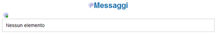

Inviare un messaggio di sistema |
Il sistema provvede un piccolo sistema di messaggistica interno che consente agli utenti dell'applicativo di comunicare tra loro velocemente e senza l'uso della email.
Comunicazioni di questo tipo sono chiamate messaggi di sistema in quanto interni al programma e non accessibili da utenti esterni.
Ogni messaggio è composto da almeno tre campi obbligatori: un destinatario (identificato dalla username), un oggetto (titolo del messaggio) e da un testo.
Oltre a questi dati è possibile specificare comportamenti addizionali come la conferma alla ricezione del messaggio, il periodo di validità (espresso in giorni)
e la priorità del messaggio.
| Il sistema di messaggistica interno non intende sostituire la tradizionale e-mail, si tratta infatti di un semplice strumento pensato per rendere veloce lo scambio di brevi e concisi messaggi riguardanti la base documentale. | |
Per poter inviare un messaggio occorre innanzi tutto conoscere l'esatta username dell'utente da contattare.
Per accedere alla pagina principale di gestione messaggi selezionare dal menù principale Dati personali --> Messaggi.
Per creare una nuovo messaggio selezionare la icona 3.1.

Dopo aver cliccatto comparirà la schermata sottostante.
Figura 33: Composizione di un messaggio
I campi obbligatori come al solito sono evidenziati con un asterisco(*).
Il campo Destinatario è obbligatorio e deve essere valorizzato con lo username dell'utente a cui è destinato il messaggio.
Il campo Soggetto è obbligatorio e deve contenere una sommaria descrizione sull'argomento del messaggio.
Il checkbox Conferma serve per richiedere al sistema di notificare al mittente la lettura del messaggio da parte del destinatario.
Nella parte inferiore della maschera un ampio campo di testo consente di inserire il corpo del messaggio.
Premendo il tasto Invia, in basso a destra il messaggio viene inserito nel sistema e l'utente "prova" lo vedrà visualizzato nella schermata di gestione messaggi (Dati personali --> Messaggi).